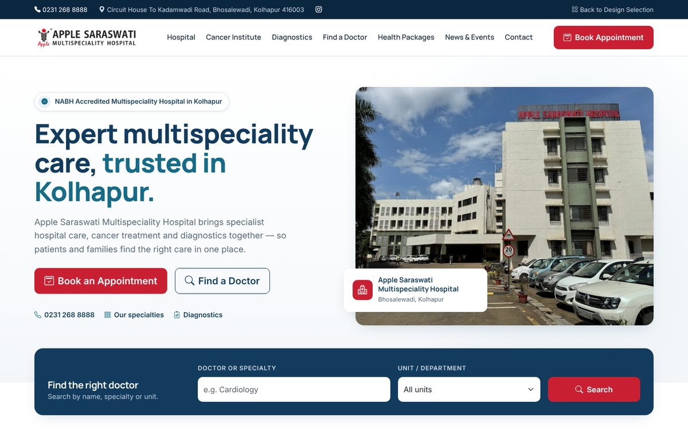

SAMPLE 1

Premium Healthcare Corporate
Structured, institutional and trustworthy — inspired by premium hospital brands.
- Clean white layout with deep navy, healthcare blue and controlled red accents
- Prominent doctor search panel and clear department grid
- Professional doctor cards, packages and a dedicated Cancer Institute section
- Single, strong "Book Appointment" action ready for a booking system or third-party link
No embedded booking form — the appointment button shows where a future booking feature will connect.
View Sample 1